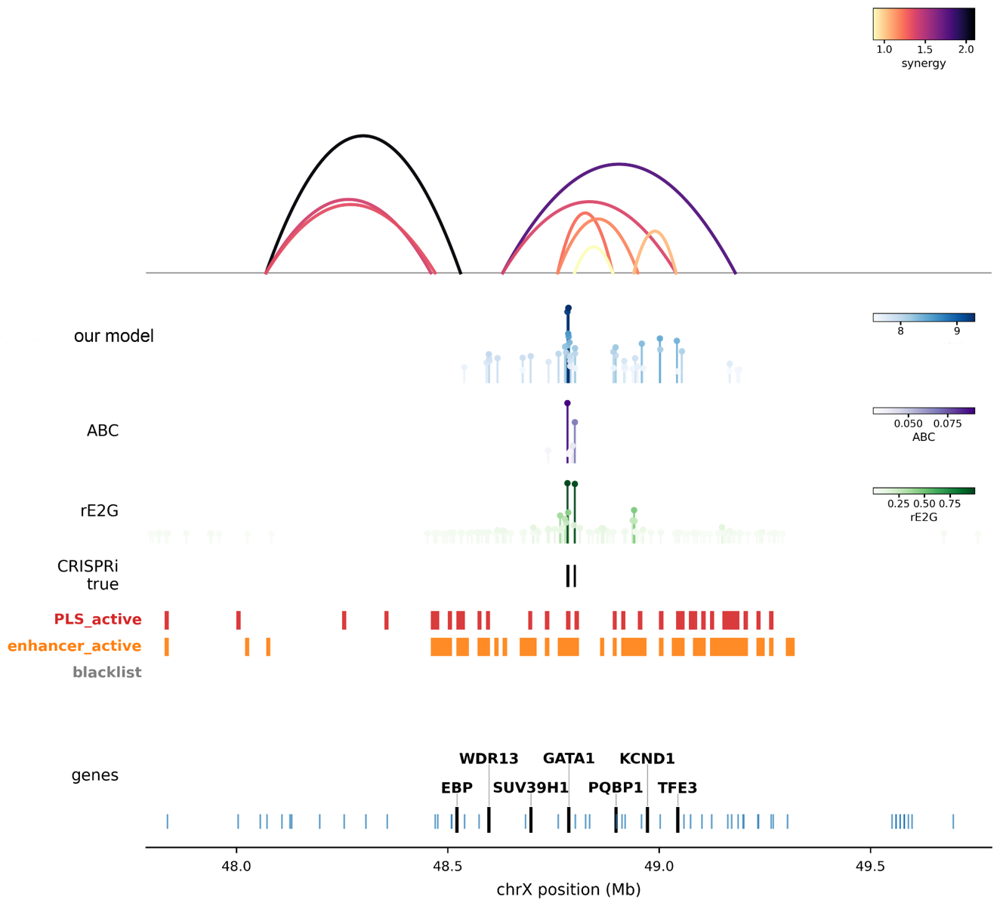

Ranking enhancers for each promoter
Which enhancers share a multiway contact with a promoter, and how much does preprocessing affect the candidates we recover?
HiPore-C · K562 and GM12878
Our model architecture
Each HiPore-C read defines a hyperedge. Separate promoter and enhancer channels propagate information through hypergraph convolution with skip connections and shared weights. Embedding compatibility and biological covariates give a ranked list for each promoter.
Filtering improves cell-type separation
The full filter cascade produced a larger within-cell-type versus cross-cell-type margin than the published filter and raw data at most resolutions. K562 at 1 Mb was an exception. Changing the coordinate convention had a much smaller effect.
Bin reassignment is local and predictable
Small coordinate shifts often cross a boundary at 1 kb. At 25 kb, the two coordinate conventions disagreed for about 1.3–1.4% of assignments. Disagreement fell further at 100 kb and 1 Mb in both cell lines.
Read-level contacts reveal enhancer–enhancer–promoter triples
Two enhancer–promoter pairs can come from separate reads. Keeping the original read identifies cases in which both enhancers occur with the same promoter. The K562 analysis reported 188 significant triples.
Multiway synergy distinguishes K562 chromatin architecture
Comparing observed with expected multiway counts identified 486 K562-specific signals and 144 GM12878-specific signals. BCR- and ABL1-associated loci were among the K562 examples.
Candidate enhancers at benchmark loci
At GATA1, several K562 model priorities coincide with active regulatory annotations. MYC–BENC provides a distal contact example. At YDJC, limited independent perturbation support makes the predictions harder to evaluate.


Method reference · HiPore-C assay paper